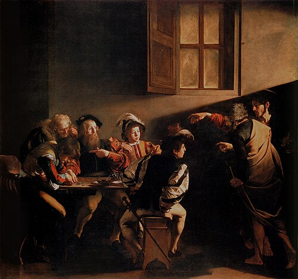

9:41
55 yüz, tek duvar
13 sesli hikâye hazır
6:20
−13:40
Sanat tarihi yolu
Yolculuk

Tamamlandı
Karanlıktan Fırlayan Işık
Roma ve Napoli · 6 durak

Sıradaki durak
Delft’in Sessiz Penceresi
Hollanda · 5 durak

Yaklaşan
Güneyin Yakıcı Sarıları
Arles ve Auvers · 6 durak